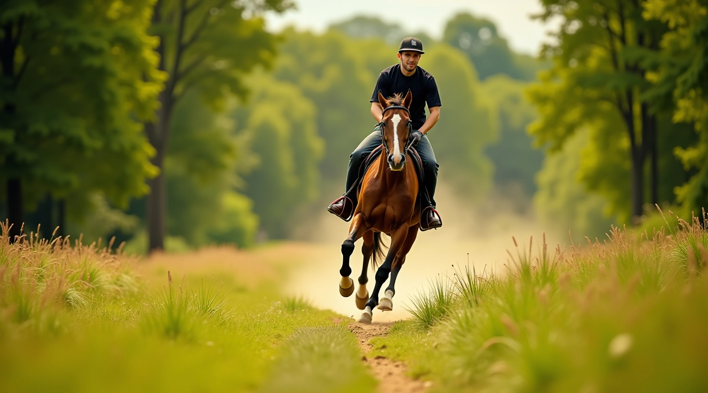
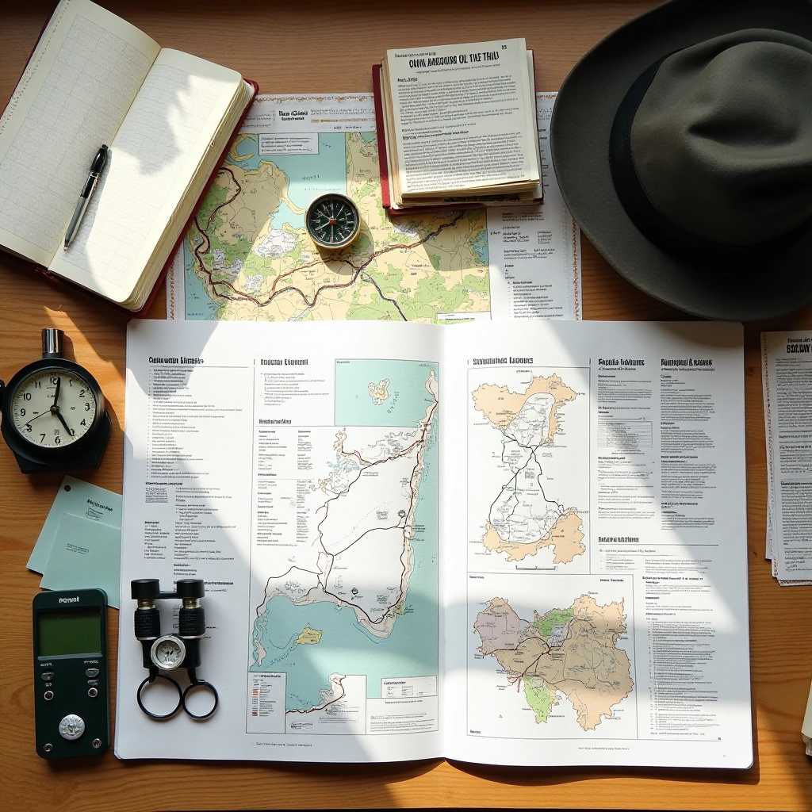
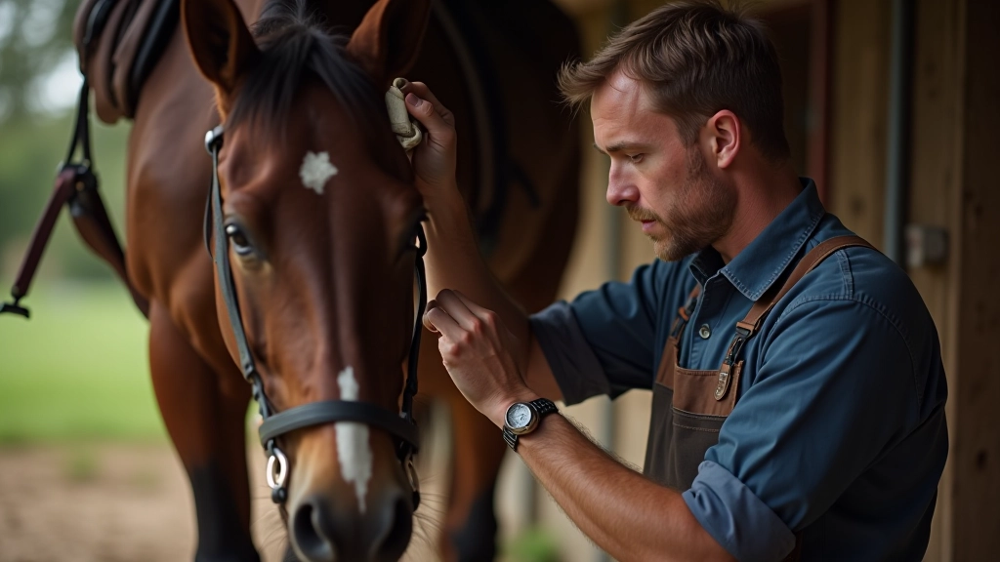
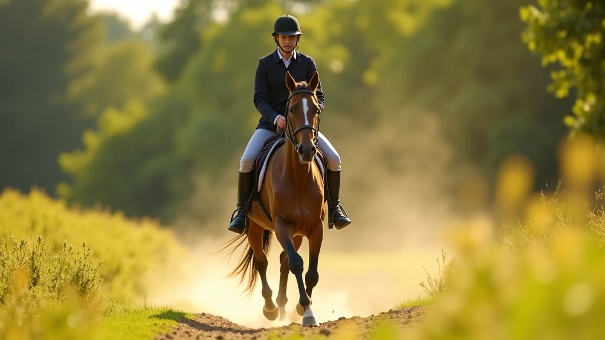
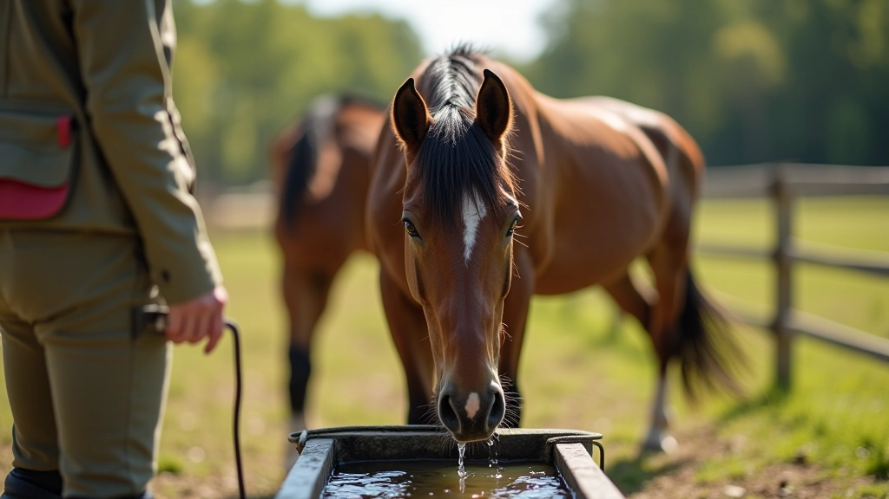
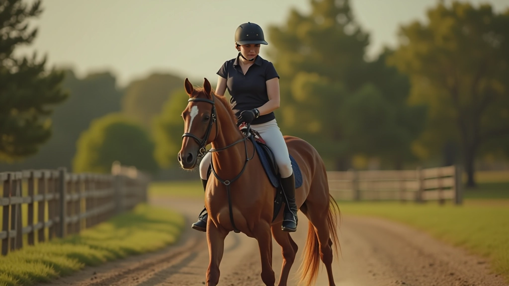

تحضير الحصان والفارس قبل المسارات الطويلة
خطوات عملية لتهيئة حصانك وتجهيز نفسك قبل رحلة طويلة. يشمل الفحوصات الأساسية والتمارين التحضيرية والتغذية الصحيحة.


لماذا التحضير مهم؟
المسارات الطويلة تتطلب تحضيراً جسدياً وعقلياً من كل من الفارس والحصان. نحن لا نتحدث فقط عن القدرة على البقاء في السرج لساعات — بل عن ضمان سلامة وراحة كليكما طوال الرحلة.
حصان غير مُهيّأ قد يصاب بالإرهاق السريع أو الإصابات. فارس بدون تحضير كافٍ سيشعر بألم العضلات وقد لا يستطيع التركيز على السلامة. الخبر الجيد؟ التحضير ليس معقداً — فقط منظماً.
في هذا الدليل ستجد:
- فحوصات صحية أساسية للحصان
- تمارين تحضيرية لبناء التحمل
- نصائح التغذية قبل وأثناء الرحلة
- تجهيز معدات الركوب والسرج
تحضير الحصان: الفحوصات الأساسية
قبل أسبوع من الرحلة الطويلة، افحص حصانك بعناية. ابدأ بالحوافر — تأكد من أنها نظيفة وخالية من الحصى والشظايا. الحافر السليم أساس كل شيء. إذا كان آخر تحديث حدادة قبل أكثر من 6 أسابيع، فقد حان الوقت لزيارة الحداد.
افحص أسنان الحصان وتأكد من عدم وجود مشاكل في المضغ. تفقد جسده بحثاً عن أي تورم أو إصابات قديمة قد تؤثر على الأداء. استمع إلى تنفسه — يجب أن يكون منتظماً وسهلاً.
لا تنسَ الفحص البيطري. لا يجب أن تكون مكلفة، لكنها ضرورية. الطبيب البيطري قد يلاحظ أشياء لن تراها أنت — مشاكل القلب، المفاصل الضعيفة، أو حتى المشاكل الهضمية.


بناء التحمل: خطة التدريب
التدريب المنتظم قبل الرحلة الطويلة يُحدث فرقاً كبيراً. ابدأ قبل 4-6 أسابيع على الأقل. في الأسابيع الأولى، ركز على ركوب معتدل — 30-45 دقيقة ثلاث مرات أسبوعياً.
ثم زيادة المدة تدريجياً. الأسبوع الثاني: 50-60 دقيقة. الأسبوع الثالث: 75-90 دقيقة. الأسبوع الرابع: حاول مسافة أطول بسرعة أبطأ. هذا يُعلّم الحصان التحمل بدلاً من السرعة.
تنويع التضاريس مهم جداً. ركوب على أرض مختلفة — عشب ناعم، طين، حصى — يقوّي العضلات بطرق مختلفة. إذا كانت رحلتك تتضمن تسلق جبال، فتدرب على التسلق قبلها.
التغذية والترطيب
التغذية الجيدة هي وقود الأداء. الحصان النشط يحتاج إلى توازن صحيح من التبن والحبوب والفيتامينات. في الأسابيع السابقة للرحلة، زيادة كمية الحبوب تدريجياً — لا تفعل ذلك فجأة.
أثناء الرحلة نفسها، حافظ على نفس روتين التغذية قدر الإمكان. الحصان يفضل الاستقرار. أحضر كمية كافية من التبن الجيد — يمكنك حساب 1.5 كيلو جرام لكل 100 كيلو جرام من وزن الحصان يومياً.
الماء أهم من كل شيء. حصان نشط يحتاج إلى 20-50 لتر يومياً حسب درجة الحرارة والنشاط. لا تسمح للحصان بشرب كميات ضخمة بسرعة — دع يشرب على فترات منتظمة. إذا كنت في منطقة حارة، أضف إلكتروليتات للماء.


تحضير الفارس: قوة وليونة
الفارس أيضاً يحتاج تحضيراً. عضلات الفخذ والمقعد والظهر ستتحمل ضغطاً كبيراً في مسار طويل. ابدأ بتمارين بسيطة: اجلس القرفصاء، تمارين الرفع، وتمارين القوة الأساسية.
الليونة مهمة بقدر القوة. شد عضلات الفخذ، الساقين، والظهر يومياً. قضاء 10-15 دقيقة على الاستطالة بعد كل ركوب يقلل من ألم العضلات. لا تتوقع الركوب لـ 6 ساعات إذا كنت تركب 45 دقيقة فقط عادة.
زيادة المدة تدريجياً كما تفعل مع حصانك. إذا كانت الرحلة ستكون يومين، حاول ركوب ساعة ونصف قبل أسبوع. الجسم يحتاج وقتاً للتكيف.
تجهيز المعدات والسرج
السرج
تأكد من أن السرج يناسب حصانك بشكل صحيح. سرج غير مناسب يسبب ألماً وإصابات. نظف السرج جيداً وفتش الجلد بحثاً عن أي تشقق. استخدم حصيرة نظيفة تحت السرج لتقليل الاحتكاك.
الكمامة واللجام
فتش الكمامة واللجام للتأكد من أنها نظيفة وفي حالة جيدة. لا تستخدم معدات مرتبة أو مكسورة. الكمامة الفضفاضة أو الضيقة جداً تسبب إزعاجاً للحصان وقد تؤثر على أدائه.
الأحزمة والأحبال
افحص جميع الأحبال والأحزمة بحثاً عن التآكل. أحبال ضعيفة قد تنقطع في الطريق. إذا كنت ستحمل حقيبة أو معدات إضافية، تأكد من أنها محمولة بشكل آمن وموازن.
ملابسك
البس ملابس مريحة وعملية. جزم ركوب جيدة مع كعب ضروري. ملابس طبقات تسمح لك بالتكيف مع تغييرات درجات الحرارة. أحضر قبعة حماية وخذ الحماية من الشمس والماء بجدية.
ملخص نقاط التحضير
التحضير الجيد يعني رحلة أفضل وأكثر أماناً لك ولحصانك. ستة أسابيع قبل الرحلة هي الوقت المثالي للبدء. فحص بيطري، تدريب منتظم، تغذية محسّنة، وتجهيز معدات — هذه هي أركان التحضير.
لا تتسرع. الحصان الذي يبدأ الرحلة وهو متعب أو غير مجهز سيعاني. أنت أيضاً ستشعر بالفرق عندما تكون مستعداً. ستركب براحة أكثر، وستستمتع بالرحلة بدلاً من مجرد النجاة منها.
تذكر: أفضل رحلة هي التي يشعر فيها كل من الحصان والفارس بأنهما بحالة جيدة طوال الوقت. التحضير ليس عملاً روتينياً ممل — إنه استثمار في سلامة وسعادة شريكك في الركوب.
ملاحظة مهمة
اختر نشاطات تناسب مستوى لياقتك وخبرتك. تحقق من الأحوال المحلية والطقس قبل الانطلاق. إذا كان لديك قلق صحي حول الركوب لفترات طويلة، تحدث مع طبيبك. كل فرد وكل حصان مختلف — استمع إلى جسدك وحصانك، واطلب مساعدة من مدربين ذوي خبرة عند الحاجة.